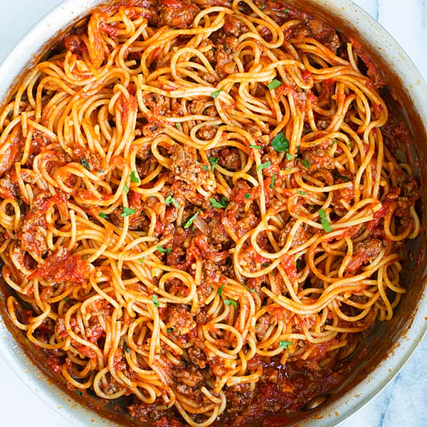

Spaghetti

Description
The spaghetti recipe is extremely simple. The sauce is a simple mix of seasoned ground beef and a jar of spaghetti sauce that is set to a low simmer for 30-60 minutes. Once the sauce is close to being done, cook the noodles and voila, you are ready to serve!
Ingredients
- 1 lb spaghetti noodles
- 1 lb ground beef
- 20-24 oz jar of spaghetti sauce of choice
- salt
- pepper
- garlic powder
- onion powder
- canola, vegetable, or olive oil
- fresh shredded basil
Steps
- Place the ground beef on a cutting board and season with salt, pepper, garlic powder, and onion powder.
- Set a large pan to medium-high heat. After allowing the pan to come up to temperature, add 2 tbsps of oil to the pan.
- Add the seasoned ground beef to the pan. After letting it sear for 2 minutes, mix the beef until it is cooked to a light brown.
- Add the jar of spaghetti sauce to the pan. Mix it around with the beef.
- Cover the pan with a lid and set to a low-simmer. Allow the sauce to simmer for 30 minutes to an hour.
- After allowing the sauce to simmer for 20-40 minutes, it is time to begin the noodles.
- Fill a large pot a little more than halfway with water. Set the pot to high-heat and add a large pinch of salt to the water.
- Once the water begins to boil, add the noodles. Stir the noodles a bit so they loosen up and are submerged by the water.
- Turn the heat down to medium and allow to simmer for 10 minutes.
- Once 10 minutes has passed, use a pair of tongs or a slotted spoon the place the noodles in a strainer.
- Add about a 1/4 of a cup of the leftover pasta water and the noodles to the sauce and mix thoroughly.
- You are ready to serve, enjoy!